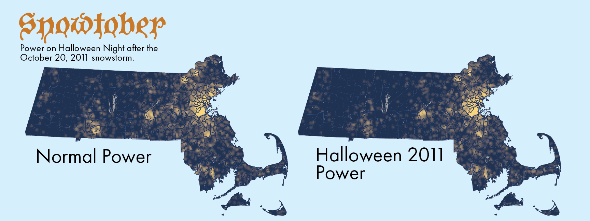
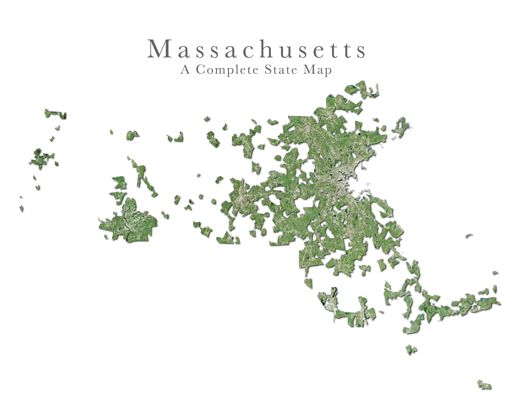

30 Day Map Challenge
The #30DayMapChallenge: one map a day for thirty days, each built around the day's theme. Maps will be added here as they are finished.


The #30DayMapChallenge: one map a day for thirty days, each built around the day's theme. Maps will be added here as they are finished.

